dtdotavgwide <- fread("/Users/wangshuning/Desktop/USC/24Fall/573Bayesian/project/osfstorage-archive/data/clean/dot_wide.csv")
dtmathavgwide <- fread("/Users/wangshuning/Desktop/USC/24Fall/573Bayesian/project/osfstorage-archive/data/clean/math_wide.csv")
dtdotavgwide[, condition := factor(condition, levels = c("performance", "neutral", "effort"))]
dtmathavgwide[, condition := factor(condition, levels = c("performance", "neutral", "effort"))]
e_vs_p <- c("effort", "performance")
e_vs_n <- c("effort", "neutral")
n_vs_p <- c("neutral", "performance")hw8
Research Question
Do effort preferences on rewarded trials in the training section differ between the effort and performance conditions? (model1) Do effort preferences on rewarded trials in the training section differ between the effort and neutral conditions? (model2) Do effort preferences on probe (unrewarded) trials in the training section differ between the effort and performance conditions? (model3) Do effort preferences on probe (unrewarded) trials in the training section differ between the effort and neutral conditons? (model4) Do effort preferences on the dot-motion task in the post-training section differ between the effort and performance conditions? (model5) Do effort preferences on the dot-motion task in the post-training section differ between the effort and neutral conditions? (model6) Do effort preferences on the math task in the post-training section differ between the effort and performance conditions? (model7) Do effort preferences on the math task in the post-training section differ between the effort and neutral conditions? (model8)
#Summary of the study design:
The entire study is divided into three sections: the pre-training section, the training section, and the post-training section. The pre-training section includes two types of cognitive tasks: the dot motion task and the math task. This section is designed to establish a baseline for participants regarding their effort expenditure. The training section is further divided into reward trials and probe trials (unrewarded), with three conditions: reward, performance, and neutral. It employs a between-subjects design to manipulate participants’ effort preferences based on the different conditions, but it includes only one cognitive task, which is the dot motion task. In the post-training section, two cognitive tasks are included: the dot motion task and the math task. The dot motion task aims to demonstrate that the manipulation in the training section has a lasting effect over time. Meanwhile, the math task is designed to show that this training not only has a sustained effect on the same task but also exerts an influence across different tasks.
Variables in dtdotavgwide (dotmotion task dataset)
condition: performance(The higher the accuracy of the task, the greater the reward), effort(Choosing the hard task yields a high reward, while choosing the easy task results in a low reward), neutral(The reward is a fixed value.).reward: The proportion of participants choosing the hard difficulty task in the reward trials during the training section (N_reward = 40 for each subject).Y_reward: The number of trials in which participants chose the hard difficulty task during the reward trials in the training section (Y_reward =reward * N_reward).probe: The proportion of participants choosing the hard difficulty task in the unreward trials during the training section (N_probe = 20 for each subject).Y_probe: The number of trials in which participants chose the hard difficulty task during the unreward trials in the training section (Y_reward = probe * N_probe).pre_training: The proportion of participants choosing the hard difficulty task in the trials of the pre-training section (N_pretraining = 40).Y_pretraining: The number of trials in which participants chose the hard difficulty task during the trials in the pre-training section (Y_pretraining = pre_training * N_pretraining).post_training: The proportion of participants choosing the hard difficulty task in the trials of the post_training section (N_posttraining = 20).Y_posttraining: The number of trials in which participants chose the hard difficulty task during the trials in the post-training section (Y_posttraining = post_training * N_posttraining).
Variables in dtmathavgwide (math task dataset)
The math task will not appear in the training section (reward trials + probe trials), so the math task dataset does not include any probe or reward trials. - condition: Same as above. - pre_training: Same as above. - Y_pretraining: Same as above. - post_training: Same as above. - Y_posttraining: Same as above.
Data Import
Variable Summary
Table Table 1 displays the summary statistics of effort preferences for the dot motion task in the pre-training(baseline) section by condition.
datasummary(Y_pretraining *
(N + Mean + SD + Min + Max + Histogram) ~
factor(condition, labels = c("performance", "neutral", "effort")),
data = dtdotavgwide)| performance | neutral | effort | ||
|---|---|---|---|---|
| Y_pretraining | N | 255 | 252 | 254 |
| Mean | 14.04 | 13.99 | 14.37 | |
| SD | 10.20 | 9.76 | 10.87 | |
| Min | 0.00 | 0.00 | 0.00 | |
| Max | 40.00 | 40.00 | 40.00 | |
| Histogram | ▇▁▁▂▆▄▁▁ | ▇▂▁▃▅▆▁ | ▇▁▁▁▄▆▁ ▁ |
Table Table 2 displays the summary statistics of effort preferences for the dot motion task during the rewarded trials in the training section, categorized by condition.
datasummary(Y_reward *
(N + Mean + SD + Min + Max + Histogram) ~
factor(condition, labels = c("performance", "neutral", "effort")),
data = dtdotavgwide)| performance | neutral | effort | ||
|---|---|---|---|---|
| Y_reward | N | 255 | 252 | 254 |
| Mean | 9.89 | 12.87 | 23.55 | |
| SD | 9.85 | 10.37 | 14.72 | |
| Min | 0.00 | 0.00 | 0.00 | |
| Max | 40.00 | 40.00 | 40.00 | |
| Histogram | ▇▃▂▁▂▁ | ▇▃▁▂▃▃▁▁ ▁ | ▆ ▁▁▁▁▂▂▇▆ |
Table Table 3 displays the summary statistics of effort preferences for the dot motion task during the unrewarded trials (probe trials) in the training section, categorized by condition.
datasummary(Y_probe *
(N + Mean + SD + Min + Max + Histogram) ~
factor(condition, labels = c("performance", "neutral", "effort")),
data = dtdotavgwide)| performance | neutral | effort | ||
|---|---|---|---|---|
| Y_probe | N | 255 | 252 | 254 |
| Mean | 7.60 | 7.53 | 8.57 | |
| SD | 5.55 | 4.93 | 6.35 | |
| Min | 0.00 | 0.00 | 0.00 | |
| Max | 20.00 | 20.00 | 20.00 | |
| Histogram | ▇▃▄▃▄▂▃▁▂▁ | ▇▄▄▆▅▄▃▁▁▁ | ▇▃▂▃▃▃▂▁▂▂ |
Table Table 4 displays the summary statistics of effort preferences for the dot motion task in the post-training section by condition.
datasummary(Y_posttraining *
(N + Mean + SD + Min + Max + Histogram) ~
factor(condition, labels = c("performance", "neutral", "effort")),
data = dtdotavgwide)| performance | neutral | effort | ||
|---|---|---|---|---|
| Y_posttraining | N | 255 | 252 | 254 |
| Mean | 5.32 | 6.07 | 7.09 | |
| SD | 5.39 | 5.40 | 6.51 | |
| Min | 0.00 | 0.00 | 0.00 | |
| Max | 20.00 | 20.00 | 20.00 | |
| Histogram | ▇▂▁▁▂▂▁ | ▇▁▁▁▄▁▁ | ▇ ▁▁▃▂▁▁ ▁ |
Table Table 5 displays the summary statistics of effort preferences for the math task in the pre-training section by condition.
datasummary(Y_pretraining *
(N + Mean + SD + Min + Max + Histogram) ~
factor(condition, labels = c("performance", "neutral", "effort")),
data = dtmathavgwide)| performance | neutral | effort | ||
|---|---|---|---|---|
| Y_pretraining | N | 255 | 252 | 254 |
| Mean | 15.32 | 16.75 | 15.60 | |
| SD | 10.12 | 9.88 | 10.78 | |
| Min | 0.00 | 0.00 | 0.00 | |
| Max | 40.00 | 40.00 | 36.00 | |
| Histogram | ▇▂▂▄▆▅▃▁▁▁ | ▆▂▃▄▇▇▄▂▁ | ▇▁▁▂▂▄▄▂▂▁ |
Table Table 6 displays the summary statistics of effort preferences for the math task in the post-training section by condition.
datasummary(Y_posttraining *
(N + Mean + SD + Min + Max + Histogram) ~
factor(condition, labels = c("performance", "neutral", "effort")),
data = dtmathavgwide)| performance | neutral | effort | ||
|---|---|---|---|---|
| Y_posttraining | N | 255 | 252 | 254 |
| Mean | 6.05 | 6.81 | 7.13 | |
| SD | 5.40 | 5.38 | 6.07 | |
| Min | 0.00 | 0.00 | 0.00 | |
| Max | 20.00 | 20.00 | 20.00 | |
| Histogram | ▇▁▁▂▃▂▁▁ | ▇▂▂▂▄▄▁▁ | ▇▁▁▁▄▂▁▁▁▁ |
Model
- \[ \begin{aligned} {Y}_i &\sim \text{Bin}(Nreward_i, \mu_i) \\ logit(\mu_i) &= \eta_i \\ \eta_j &= \beta_0 + \beta_1 (\text{condition}_i)+\beta_2 (\text{pretraining}_i) \end{aligned} \]
Prior: \[ \begin{aligned} \beta_0 \sim \mathcal{t4}(0, 2.5) \\ \quad \beta_1, \beta_2 \sim \mathcal{t4}(0, 1) \end{aligned} \]
- \[ \begin{aligned} {Y}_i &\sim \text{Bin}(Nreward_i, \mu_i) \\ logit(\mu_i) &= \eta_i \\ \eta_j &= \beta_0 + \beta_1 (\text{condition}_i)+\beta_2 (\text{pretraining}_i) \end{aligned} \]
Prior: \[ \begin{aligned} \beta_0 \sim \mathcal{t4}(0, 2.5) \\ \quad \beta_1, \beta_2 \sim \mathcal{t4}(0, 1) \end{aligned} \]
- \[ \begin{aligned} {Y}_i &\sim \text{Bin}(Nprobe_i, \mu_i) \\ logit(\mu_i) &= \eta_i \\ \eta_j &= \beta_0 + \beta_1 (\text{condition}_i)+\beta_2 (\text{pretraining}_i) \end{aligned} \]
Prior: \[ \begin{aligned} \beta_0 \sim \mathcal{t4}(0, 2.5) \\ \quad \beta_1, \beta_2 \sim \mathcal{t4}(0, 1) \end{aligned} \]
- \[ \begin{aligned} {Y}_i &\sim \text{Bin}(Nprobe_i, \mu_i) \\ logit(\mu_i) &= \eta_i \\ \eta_j &= \beta_0 + \beta_1 (\text{condition}_i)+\beta_2 (\text{pretraining}_i) \end{aligned} \]
Prior: \[ \begin{aligned} \beta_0 \sim \mathcal{t4}(0, 2.5) \\ \quad \beta_1, \beta_2 \sim \mathcal{t4}(0, 1) \end{aligned} \]
- \[ \begin{aligned} {Y}_i &\sim \text{Bin}(Npost training_i, \mu_i) \\ logit(\mu_i) &= \eta_i \\ \eta_j &= \beta_0 + \beta_1 (\text{condition}_i)+\beta_2 (\text{pretraining}_i) \end{aligned} \]
Prior: \[ \begin{aligned} \beta_0 \sim \mathcal{t4}(0, 2.5) \\ \quad \beta_1, \beta_2 \sim \mathcal{t4}(0, 1) \end{aligned} \]
- \[ \begin{aligned} {Y}_i &\sim \text{Bin}(Nposttraining_i, \mu_i) \\ logit(\mu_i) &= \eta_i \\ \eta_j &= \beta_0 + \beta_1 (\text{condition}_i)+\beta_2 (\text{pretraining}_i) \end{aligned} \]
Prior: \[ \begin{aligned} \beta_0 \sim \mathcal{t4}(0, 2.5) \\ \quad \beta_1, \beta_2 \sim \mathcal{t4}(0, 1) \end{aligned} \]
- \[ \begin{aligned} {Y}_i &\sim \text{Bin}(Nposttraining_i, \mu_i) \\ logit(\mu_i) &= \eta_i \\ \eta_j &= \beta_0 + \beta_1 (\text{condition}_i)+\beta_2 (\text{pretraining}_i) \end{aligned} \]
Prior: \[ \begin{aligned} \beta_0 \sim \mathcal{t4}(0, 2.5) \\ \quad \beta_1, \beta_2 \sim \mathcal{t4}(0, 1) \end{aligned} \]
- \[ \begin{aligned} {Y}_i &\sim \text{Bin}(Nposttraining_i, \mu_i) \\ logit(\mu_i) &= \eta_i \\ \eta_j &= \beta_0 + \beta_1 (\text{condition}_i)+\beta_2 (\text{pretraining}_i) \end{aligned} \]
Prior: \[ \begin{aligned} \beta_0 \sim \mathcal{t4}(0, 2.5) \\ \quad \beta_1, \beta_2 \sim \mathcal{t4}(0, 1) \end{aligned} \]
Do effort preferences on rewarded trials in the training section differ between the effort and performance conditions? (model1)
Analysis
We used 4 chains, each with 8,000 iterations (first 4,000 as warm-ups).
Results
summary_results1<-summary(model1)
summary_results1 Family: binomial
Links: mu = logit
Formula: Y_reward | trials(N_reward) ~ condition + Y_pretraining + (1 | subj)
Data: dtdotavgwide[condition %in% e_vs_p] (Number of observations: 509)
Draws: 4 chains, each with iter = 8000; warmup = 4000; thin = 1;
total post-warmup draws = 16000
Multilevel Hyperparameters:
~subj (Number of levels: 509)
Estimate Est.Error l-95% CI u-95% CI Rhat Bulk_ESS Tail_ESS
sd(Intercept) 1.99 0.08 1.84 2.16 1.00 2534 5829
Regression Coefficients:
Estimate Est.Error l-95% CI u-95% CI Rhat Bulk_ESS Tail_ESS
Intercept -3.25 0.19 -3.62 -2.88 1.00 1360 2172
conditioneffort 1.88 0.19 1.50 2.26 1.01 886 1780
Y_pretraining 0.11 0.01 0.09 0.13 1.00 1278 2452
Draws were sampled using sampling(NUTS). For each parameter, Bulk_ESS
and Tail_ESS are effective sample size measures, and Rhat is the potential
scale reduction factor on split chains (at convergence, Rhat = 1).plot(model1)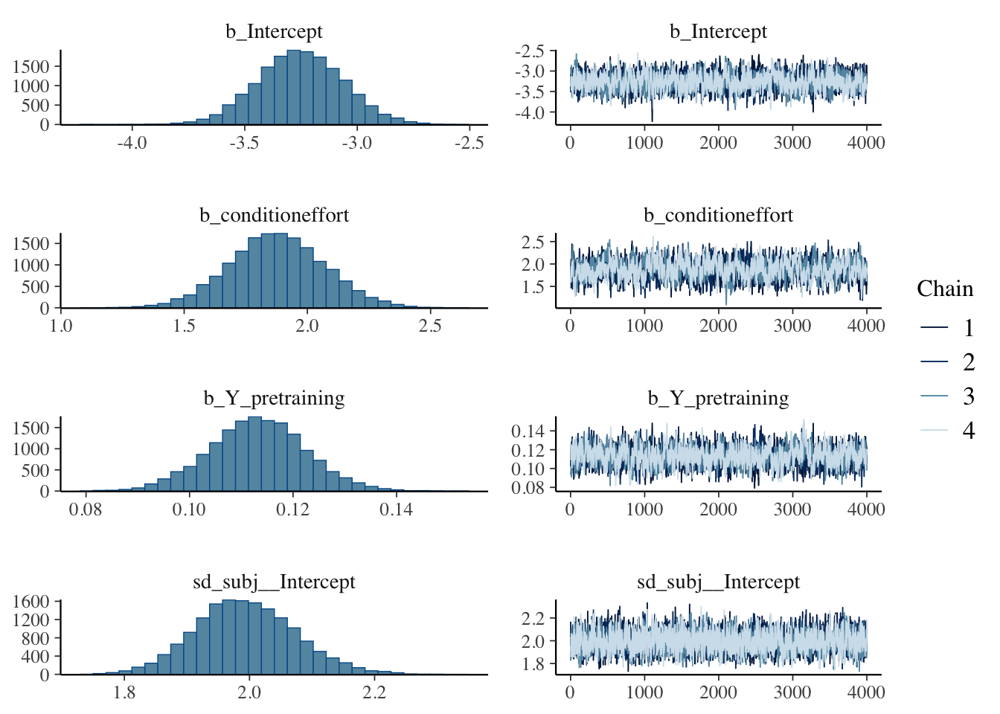
pp_check(model1)Using 10 posterior draws for ppc type 'dens_overlay' by default.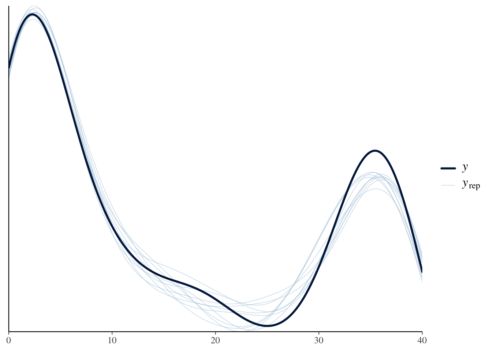
As shown in the rank histogram in Figure 1 below, the chains mixed well.
as_draws(model1) |>
mcmc_rank_hist(pars = c("b_conditioneffort", "b_Y_pretraining", "b_Intercept"))
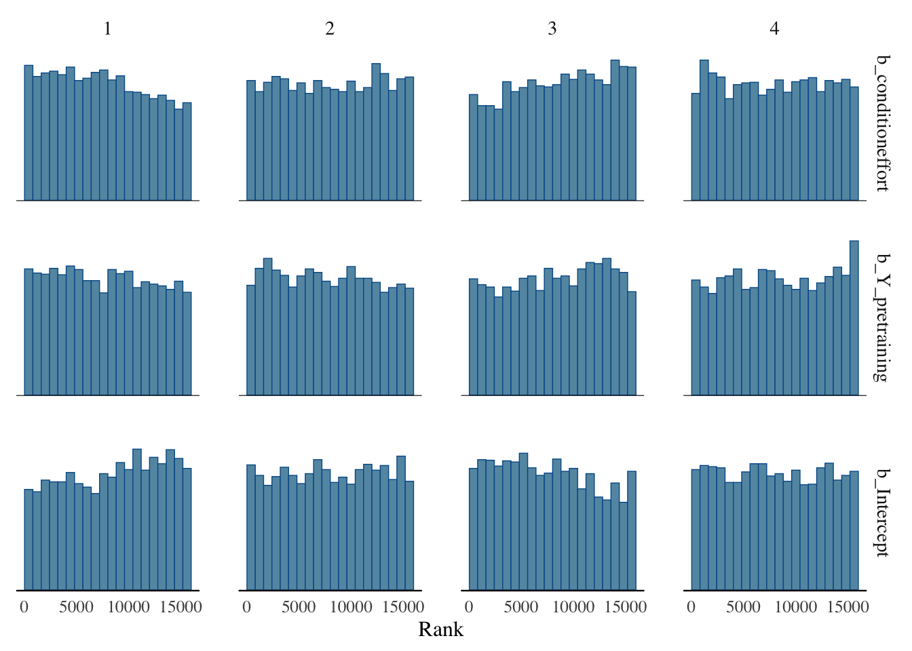
Table 7 shows the posterior distributions of b_conditioneffort, b_Y_pretraining, b_Intercept.
summ_fit1 <- as_draws_df(model1) |>
subset_draws(variable = c("b_conditioneffort", "b_Y_pretraining", "b_Intercept")) |>
summarise_draws()
knitr::kable(summ_fit1, digits = 2)| variable | mean | median | sd | mad | q5 | q95 | rhat | ess_bulk | ess_tail |
|---|---|---|---|---|---|---|---|---|---|
| b_conditioneffort | 1.88 | 1.88 | 0.19 | 0.19 | 1.56 | 2.20 | 1.01 | 885.68 | 1779.56 |
| b_Y_pretraining | 0.11 | 0.11 | 0.01 | 0.01 | 0.10 | 0.13 | 1.00 | 1277.74 | 2452.38 |
| b_Intercept | -3.25 | -3.25 | 0.19 | 0.19 | -3.56 | -2.94 | 1.00 | 1359.72 | 2171.65 |
The analysis showed that effort preferences in rewarded trials under effort conditions were significantly higher than those in the performance condition., with a posterior mean of 1.88 and a 90% CI of [1.56, 2.2].
Do effort preferences on rewarded trials in the training section differ between the effort and neutral conditions? (model2)
Analysis
We used 4 chains, each with 8,000 iterations (first 4,000 as warm-ups).
Results
summary_results2<-summary(model2)
summary_results2 Family: binomial
Links: mu = logit
Formula: Y_reward | trials(N_reward) ~ condition + Y_pretraining + (1 | subj)
Data: dtdotavgwide[condition %in% e_vs_n] (Number of observations: 506)
Draws: 4 chains, each with iter = 8000; warmup = 4000; thin = 1;
total post-warmup draws = 16000
Multilevel Hyperparameters:
~subj (Number of levels: 506)
Estimate Est.Error l-95% CI u-95% CI Rhat Bulk_ESS Tail_ESS
sd(Intercept) 1.97 0.08 1.82 2.13 1.00 2516 5906
Regression Coefficients:
Estimate Est.Error l-95% CI u-95% CI Rhat Bulk_ESS Tail_ESS
Intercept -2.90 0.19 -3.27 -2.53 1.00 1357 3442
conditioneffort 1.43 0.18 1.06 1.78 1.01 956 1977
Y_pretraining 0.12 0.01 0.10 0.14 1.00 1611 3401
Draws were sampled using sampling(NUTS). For each parameter, Bulk_ESS
and Tail_ESS are effective sample size measures, and Rhat is the potential
scale reduction factor on split chains (at convergence, Rhat = 1).plot(model2)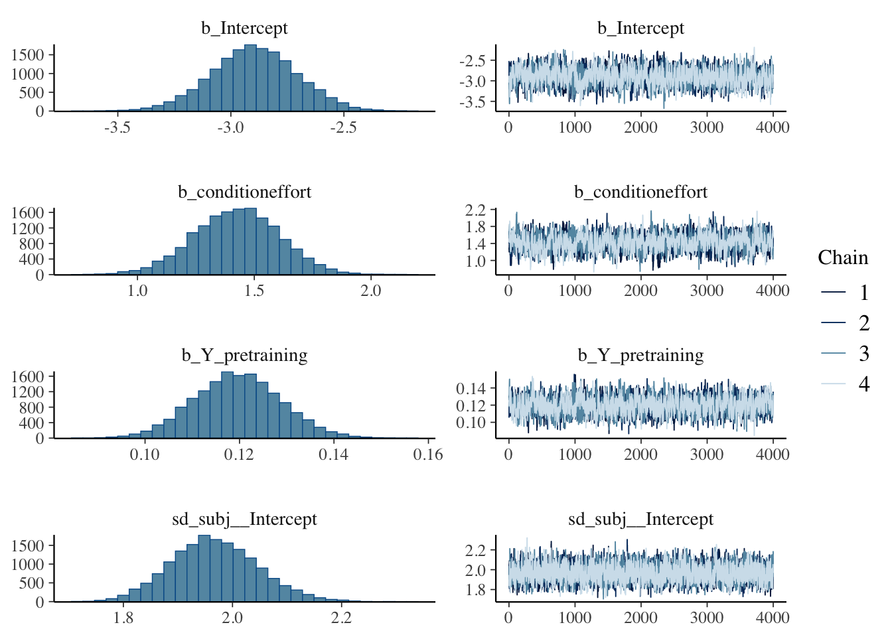
pp_check(model2)Using 10 posterior draws for ppc type 'dens_overlay' by default.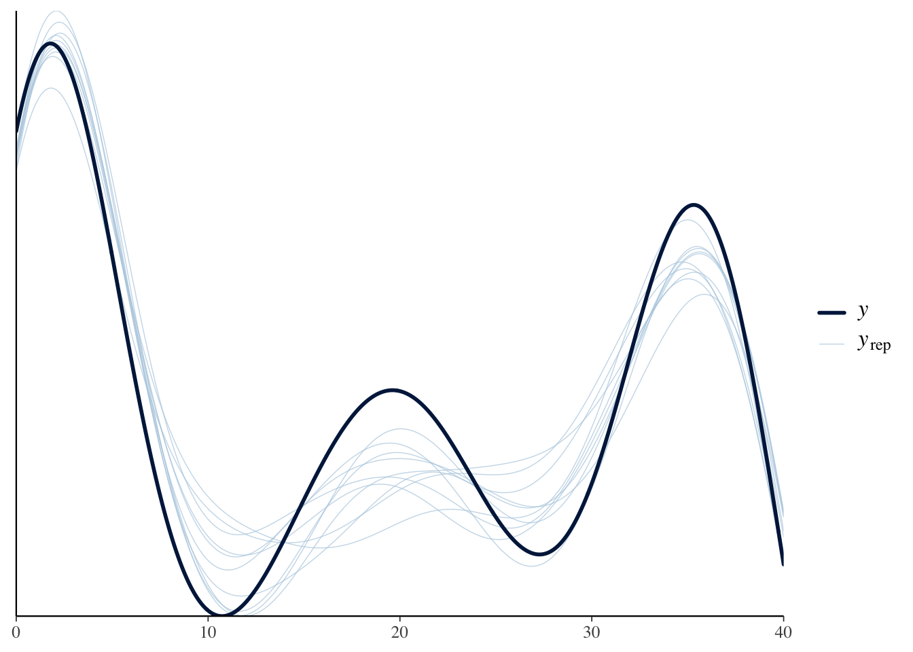
As shown in the rank histogram in Figure 2 below, the chains mixed well.
as_draws(model2) |>
mcmc_rank_hist(pars = c("b_conditioneffort", "b_Y_pretraining", "b_Intercept"))
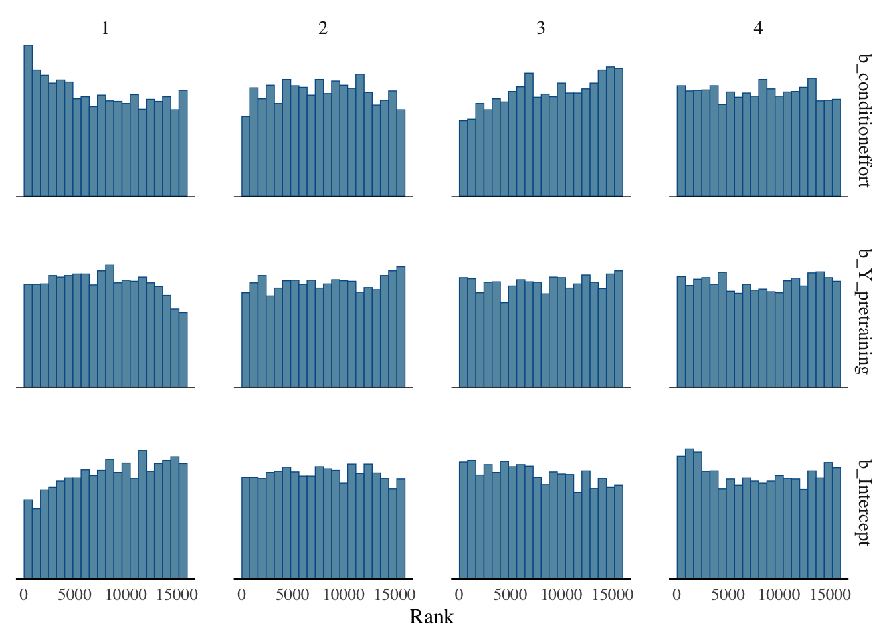
Table 8 shows the posterior distributions of b_conditioneffort, b_Y_pretraining, b_Intercept.
summ_fit2 <- as_draws_df(model2) |>
subset_draws(variable = c("b_conditioneffort", "b_Y_pretraining", "b_Intercept")) |>
summarise_draws()
knitr::kable(summ_fit2, digits = 2)| variable | mean | median | sd | mad | q5 | q95 | rhat | ess_bulk | ess_tail |
|---|---|---|---|---|---|---|---|---|---|
| b_conditioneffort | 1.43 | 1.43 | 0.18 | 0.18 | 1.12 | 1.72 | 1.01 | 956.29 | 1976.95 |
| b_Y_pretraining | 0.12 | 0.12 | 0.01 | 0.01 | 0.10 | 0.13 | 1.00 | 1611.27 | 3400.87 |
| b_Intercept | -2.90 | -2.90 | 0.19 | 0.19 | -3.21 | -2.58 | 1.00 | 1356.88 | 3441.61 |
The analysis showed that effort preferences in rewarded trials under effort conditions were significantly higher than those in the neutral condition., with a posterior mean of 1.43 and a 90% CI of [1.12, 1.72].
Do effort preferences on probe (unrewarded) trials in the training section differ between the effort and performance conditions? (model3)
Analysis
We used 4 chains, each with 8,000 iterations (first 4,000 as warm-ups).
Results
summary_results3<-summary(model3)
summary_results3 Family: binomial
Links: mu = logit
Formula: Y_probe | trials(N_probe) ~ condition + Y_pretraining + (1 | subj)
Data: dtdotavgwide[condition %in% e_vs_p] (Number of observations: 509)
Draws: 4 chains, each with iter = 8000; warmup = 4000; thin = 1;
total post-warmup draws = 16000
Multilevel Hyperparameters:
~subj (Number of levels: 509)
Estimate Est.Error l-95% CI u-95% CI Rhat Bulk_ESS Tail_ESS
sd(Intercept) 1.64 0.07 1.51 1.78 1.00 4254 7509
Regression Coefficients:
Estimate Est.Error l-95% CI u-95% CI Rhat Bulk_ESS Tail_ESS
Intercept -1.84 0.16 -2.15 -1.53 1.00 2432 5086
conditioneffort 0.24 0.16 -0.07 0.54 1.00 2290 4790
Y_pretraining 0.08 0.01 0.06 0.09 1.00 2760 4393
Draws were sampled using sampling(NUTS). For each parameter, Bulk_ESS
and Tail_ESS are effective sample size measures, and Rhat is the potential
scale reduction factor on split chains (at convergence, Rhat = 1).plot(model3)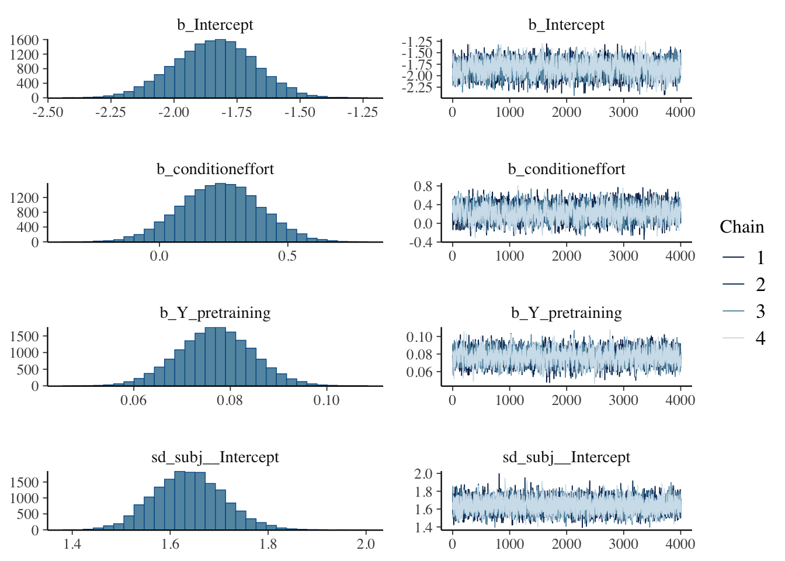
pp_check(model3)Using 10 posterior draws for ppc type 'dens_overlay' by default.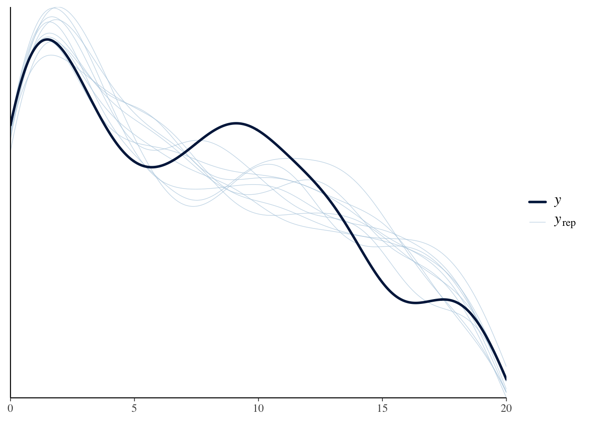
As shown in the rank histogram in Figure 3 below, the chains mixed well.
as_draws(model3) |>
mcmc_rank_hist(pars = c("b_conditioneffort", "b_Y_pretraining", "b_Intercept"))
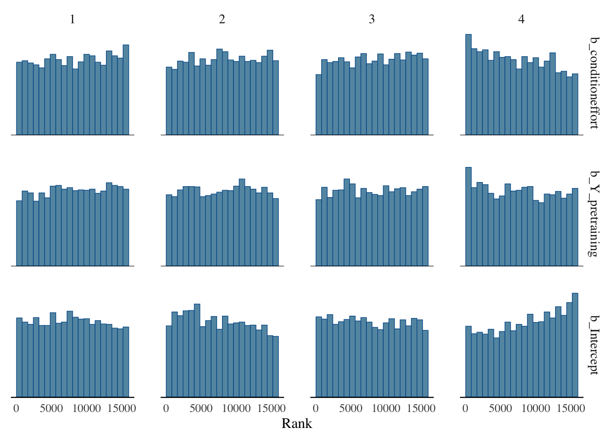
Table 9 shows the posterior distributions of b_conditioneffort, b_Y_pretraining, b_Intercept.
summ_fit3 <- as_draws_df(model3) |>
subset_draws(variable = c("b_conditioneffort", "b_Y_pretraining", "b_Intercept")) |>
summarise_draws()
knitr::kable(summ_fit3, digits = 2)| variable | mean | median | sd | mad | q5 | q95 | rhat | ess_bulk | ess_tail |
|---|---|---|---|---|---|---|---|---|---|
| b_conditioneffort | 0.24 | 0.24 | 0.16 | 0.16 | -0.02 | 0.49 | 1 | 2290.08 | 4790.21 |
| b_Y_pretraining | 0.08 | 0.08 | 0.01 | 0.01 | 0.06 | 0.09 | 1 | 2760.47 | 4393.16 |
| b_Intercept | -1.84 | -1.84 | 0.16 | 0.16 | -2.10 | -1.58 | 1 | 2432.21 | 5085.97 |
The analysis showed that effort preferences in probe trials under effort conditions were not significantly higher than those in the performance condition., with a posterior mean of 0.24 and a 90% CI of [-0.02, 0.49].
Do effort preferences on probe (unrewarded) trials in the training section differ between the effort and neutral conditons? (model4)
Analysis
We used 4 chains, each with 8,000 iterations (first 4,000 as warm-ups).
Results
summary_results4<-summary(model4)
summary_results4 Family: binomial
Links: mu = logit
Formula: Y_probe | trials(N_probe) ~ condition + Y_pretraining + (1 | subj)
Data: dtdotavgwide[condition %in% e_vs_n] (Number of observations: 506)
Draws: 4 chains, each with iter = 8000; warmup = 4000; thin = 1;
total post-warmup draws = 16000
Multilevel Hyperparameters:
~subj (Number of levels: 506)
Estimate Est.Error l-95% CI u-95% CI Rhat Bulk_ESS Tail_ESS
sd(Intercept) 1.45 0.06 1.32 1.58 1.00 4635 8686
Regression Coefficients:
Estimate Est.Error l-95% CI u-95% CI Rhat Bulk_ESS Tail_ESS
Intercept -1.89 0.14 -2.17 -1.61 1.00 4290 7665
conditioneffort 0.22 0.14 -0.05 0.49 1.00 3894 6609
Y_pretraining 0.08 0.01 0.07 0.10 1.00 3937 6389
Draws were sampled using sampling(NUTS). For each parameter, Bulk_ESS
and Tail_ESS are effective sample size measures, and Rhat is the potential
scale reduction factor on split chains (at convergence, Rhat = 1).plot(model4)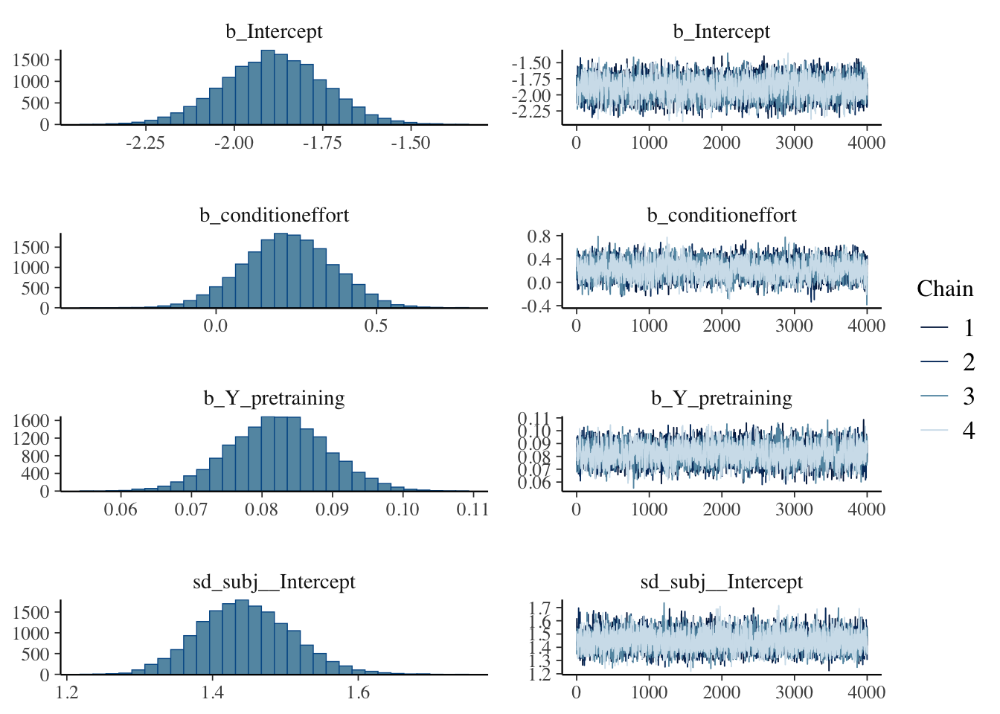
pp_check(model4)Using 10 posterior draws for ppc type 'dens_overlay' by default.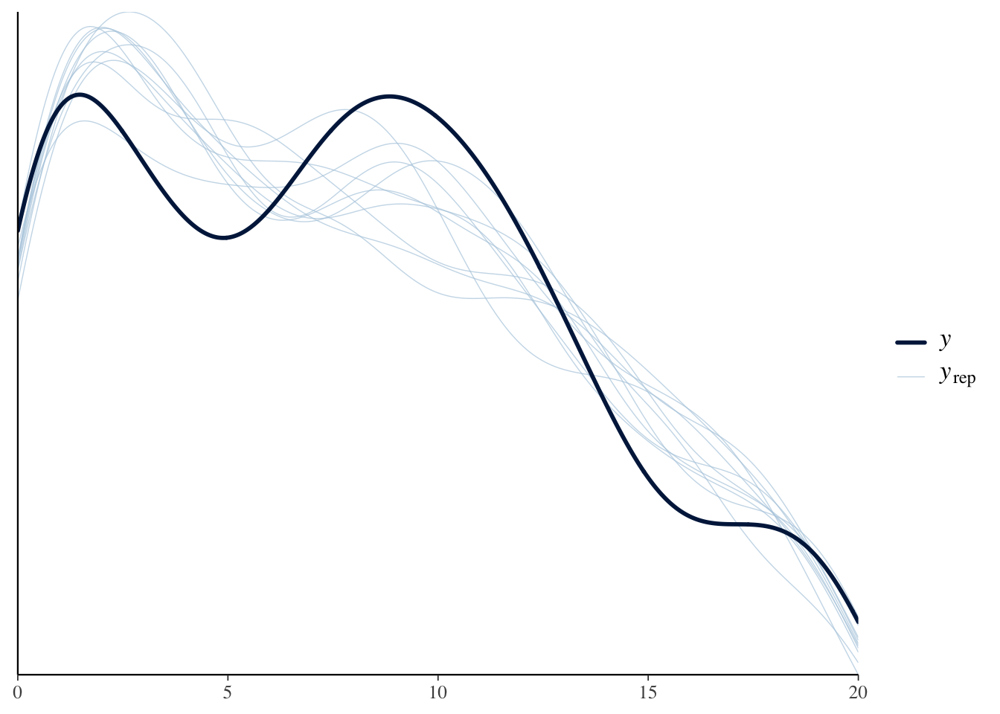
As shown in the rank histogram in Figure 4 below, the chains mixed well.
as_draws(model4) |>
mcmc_rank_hist(pars = c("b_conditioneffort", "b_Y_pretraining", "b_Intercept"))
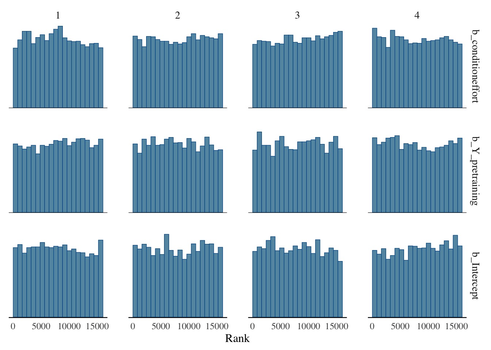
Table 10 shows the posterior distributions of b_conditioneffort, b_Y_pretraining, b_Intercept.
summ_fit4 <- as_draws_df(model4) |>
subset_draws(variable = c("b_conditioneffort", "b_Y_pretraining", "b_Intercept")) |>
summarise_draws()
knitr::kable(summ_fit4, digits = 3)| variable | mean | median | sd | mad | q5 | q95 | rhat | ess_bulk | ess_tail |
|---|---|---|---|---|---|---|---|---|---|
| b_conditioneffort | 0.224 | 0.224 | 0.140 | 0.140 | -0.009 | 0.452 | 1.001 | 3894.378 | 6608.948 |
| b_Y_pretraining | 0.082 | 0.082 | 0.007 | 0.007 | 0.071 | 0.094 | 1.001 | 3936.660 | 6388.507 |
| b_Intercept | -1.889 | -1.889 | 0.143 | 0.142 | -2.128 | -1.655 | 1.000 | 4289.605 | 7665.380 |
The analysis showed that effort preferences in probe trials under effort conditions were not significantly higher than those in the neutral condition., with a posterior mean of 0.224 and a 90% CI of [-0.009, 0.452].
Do effort preferences on the dot-motion task in the post-training section differ between the effort and performance conditions? (model5)
Analysis
We used 4 chains, each with 8,000 iterations (first 4,000 as warm-ups).
Results
summary_results5<-summary(model5)
summary_results5 Family: binomial
Links: mu = logit
Formula: Y_posttraining | trials(N_posttraining) ~ condition + Y_pretraining + (1 | subj)
Data: dtdotavgwide[condition %in% e_vs_p] (Number of observations: 509)
Draws: 4 chains, each with iter = 8000; warmup = 4000; thin = 1;
total post-warmup draws = 16000
Multilevel Hyperparameters:
~subj (Number of levels: 509)
Estimate Est.Error l-95% CI u-95% CI Rhat Bulk_ESS Tail_ESS
sd(Intercept) 1.81 0.09 1.65 1.99 1.00 3415 6663
Regression Coefficients:
Estimate Est.Error l-95% CI u-95% CI Rhat Bulk_ESS Tail_ESS
Intercept -4.00 0.20 -4.41 -3.62 1.00 3239 6244
conditioneffort 0.50 0.18 0.15 0.85 1.00 1833 3426
Y_pretraining 0.15 0.01 0.14 0.17 1.00 2884 5737
Draws were sampled using sampling(NUTS). For each parameter, Bulk_ESS
and Tail_ESS are effective sample size measures, and Rhat is the potential
scale reduction factor on split chains (at convergence, Rhat = 1).plot(model5)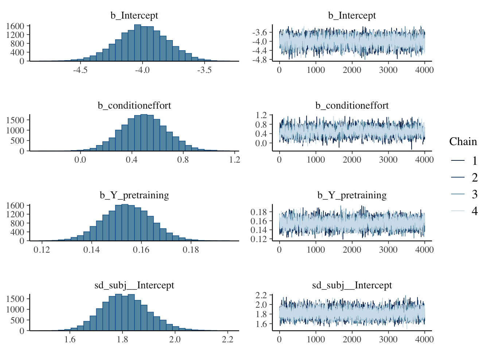
pp_check(model5)Using 10 posterior draws for ppc type 'dens_overlay' by default.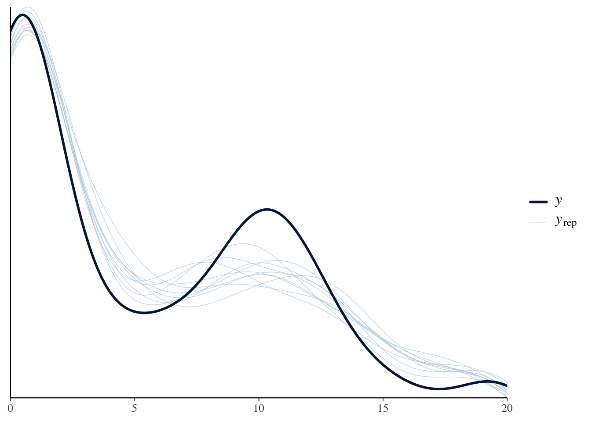
As shown in the rank histogram in Figure 5 below, the chains mixed well.
as_draws(model5) |>
mcmc_rank_hist(pars = c("b_conditioneffort", "b_Y_pretraining", "b_Intercept"))
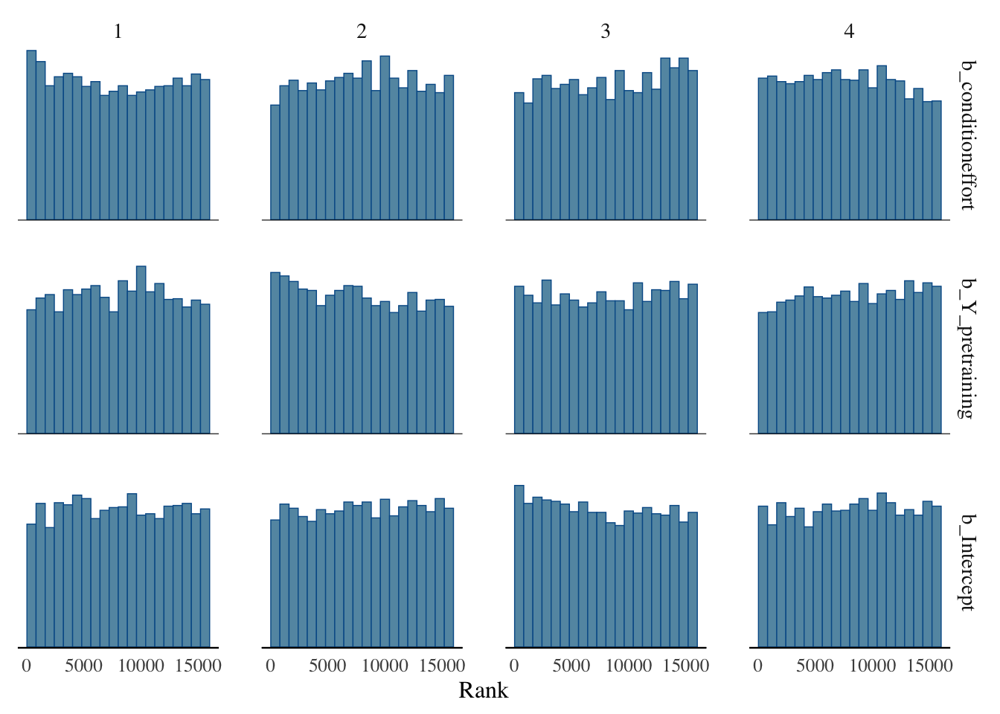
Table 11 shows the posterior distributions of b_conditioneffort, b_Y_pretraining, b_Intercept.
summ_fit5 <- as_draws_df(model5) |>
subset_draws(variable = c("b_conditioneffort", "b_Y_pretraining", "b_Intercept")) |>
summarise_draws()
knitr::kable(summ_fit5, digits = 2)| variable | mean | median | sd | mad | q5 | q95 | rhat | ess_bulk | ess_tail |
|---|---|---|---|---|---|---|---|---|---|
| b_conditioneffort | 0.50 | 0.49 | 0.18 | 0.18 | 0.21 | 0.79 | 1 | 1833.10 | 3426.29 |
| b_Y_pretraining | 0.15 | 0.15 | 0.01 | 0.01 | 0.14 | 0.17 | 1 | 2883.81 | 5736.92 |
| b_Intercept | -4.00 | -4.00 | 0.20 | 0.20 | -4.34 | -3.67 | 1 | 3238.86 | 6243.68 |
The analysis showed that effort preferences in post-training section under effort conditions were significantly higher than those in the performance condition in dot motion task, with a posterior mean of 0.5 and a 90% CI of [0.21, 0.79].
Do effort preferences on the dot-motion task in the post-training section differ between the effort and neutral conditions? (model6)
Analysis
We used 4 chains, each with 8,000 iterations (first 4,000 as warm-ups).
Results
summary_results6<-summary(model6)
summary_results6 Family: binomial
Links: mu = logit
Formula: Y_posttraining | trials(N_posttraining) ~ condition + Y_pretraining + (1 | subj)
Data: dtdotavgwide[condition %in% e_vs_n] (Number of observations: 506)
Draws: 4 chains, each with iter = 8000; warmup = 4000; thin = 1;
total post-warmup draws = 16000
Multilevel Hyperparameters:
~subj (Number of levels: 506)
Estimate Est.Error l-95% CI u-95% CI Rhat Bulk_ESS Tail_ESS
sd(Intercept) 1.74 0.09 1.58 1.92 1.00 4510 9081
Regression Coefficients:
Estimate Est.Error l-95% CI u-95% CI Rhat Bulk_ESS Tail_ESS
Intercept -3.90 0.20 -4.31 -3.52 1.00 5958 9257
conditioneffort 0.24 0.17 -0.10 0.58 1.00 3304 6588
Y_pretraining 0.17 0.01 0.15 0.19 1.00 5329 8502
Draws were sampled using sampling(NUTS). For each parameter, Bulk_ESS
and Tail_ESS are effective sample size measures, and Rhat is the potential
scale reduction factor on split chains (at convergence, Rhat = 1).plot(model6)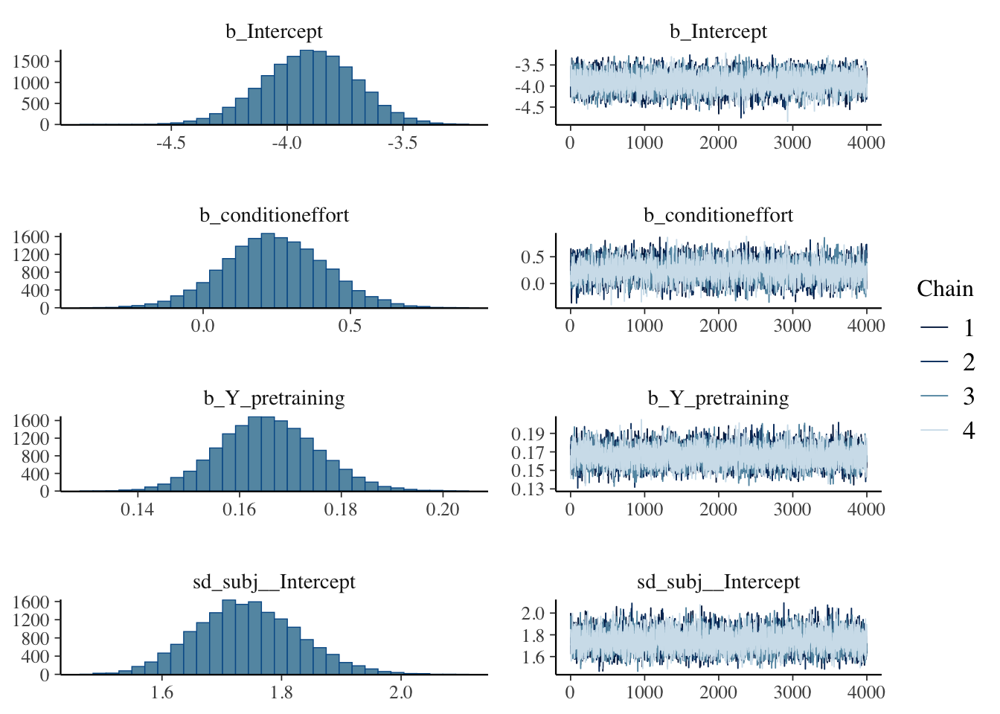
pp_check(model6)Using 10 posterior draws for ppc type 'dens_overlay' by default.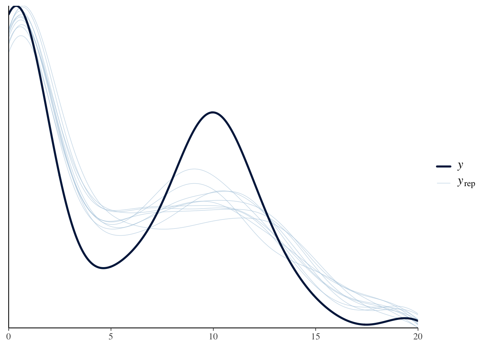
As shown in the rank histogram in Figure 6 below, the chains mixed well.
as_draws(model6) |>
mcmc_rank_hist(pars = c("b_conditioneffort", "b_Y_pretraining", "b_Intercept"))
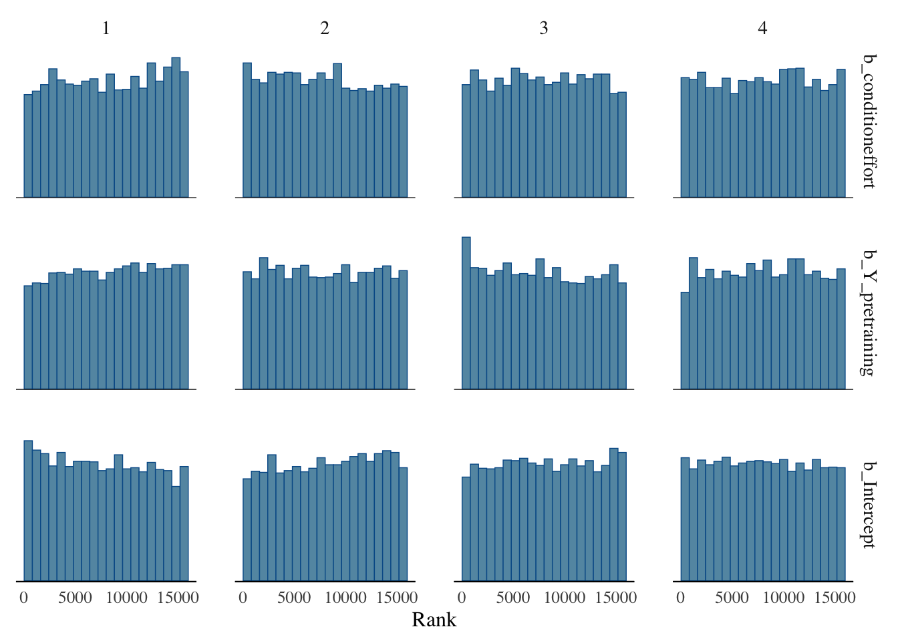
Table 12 shows the posterior distributions of b_conditioneffort, b_Y_pretraining, b_Intercept.
summ_fit6 <- as_draws_df(model6) |>
subset_draws(variable = c("b_conditioneffort", "b_Y_pretraining", "b_Intercept")) |>
summarise_draws()
knitr::kable(summ_fit6, digits = 2)| variable | mean | median | sd | mad | q5 | q95 | rhat | ess_bulk | ess_tail |
|---|---|---|---|---|---|---|---|---|---|
| b_conditioneffort | 0.24 | 0.24 | 0.17 | 0.17 | -0.04 | 0.53 | 1 | 3303.96 | 6588.48 |
| b_Y_pretraining | 0.17 | 0.17 | 0.01 | 0.01 | 0.15 | 0.18 | 1 | 5328.70 | 8502.33 |
| b_Intercept | -3.90 | -3.90 | 0.20 | 0.20 | -4.24 | -3.58 | 1 | 5957.65 | 9257.18 |
The analysis showed that effort preferences in post-training section under effort conditions were not significantly higher than those in the neutral condition in dot motion task, with a posterior mean of 0.24 and a 90% CI of [-0.04, 0.53].
Do effort preferences on the math task in the post-training section differ between the effort and performance conditions? (model7)
Analysis
We used 4 chains, each with 8,000 iterations (first 4,000 as warm-ups).
Results
summary_results7<-summary(model7)
summary_results7 Family: binomial
Links: mu = logit
Formula: Y_posttraining | trials(N_posttraining) ~ condition + Y_pretraining + (1 | subj)
Data: dtmathavgwide[condition %in% e_vs_p] (Number of observations: 509)
Draws: 4 chains, each with iter = 8000; warmup = 4000; thin = 1;
total post-warmup draws = 16000
Multilevel Hyperparameters:
~subj (Number of levels: 509)
Estimate Est.Error l-95% CI u-95% CI Rhat Bulk_ESS Tail_ESS
sd(Intercept) 1.20 0.06 1.08 1.33 1.00 5075 8143
Regression Coefficients:
Estimate Est.Error l-95% CI u-95% CI Rhat Bulk_ESS Tail_ESS
Intercept -4.09 0.17 -4.43 -3.77 1.00 6967 10143
conditioneffort 0.28 0.13 0.03 0.54 1.00 4728 8083
Y_pretraining 0.17 0.01 0.15 0.18 1.00 6482 9783
Draws were sampled using sampling(NUTS). For each parameter, Bulk_ESS
and Tail_ESS are effective sample size measures, and Rhat is the potential
scale reduction factor on split chains (at convergence, Rhat = 1).plot(model7)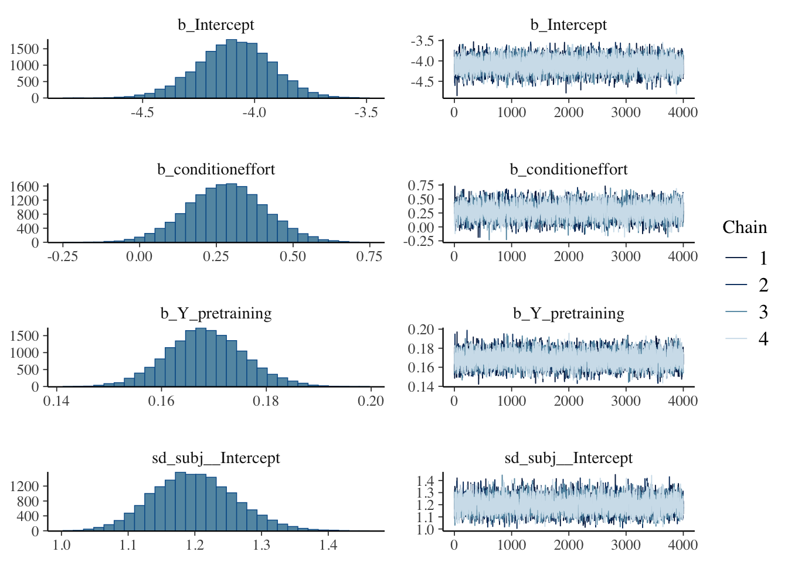
pp_check(model7)Using 10 posterior draws for ppc type 'dens_overlay' by default.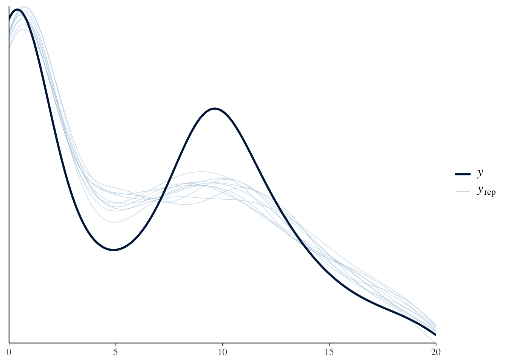
As shown in the rank histogram in Figure 7 below, the chains mixed well.
as_draws(model7) |>
mcmc_rank_hist(pars = c("b_conditioneffort", "b_Y_pretraining", "b_Intercept"))
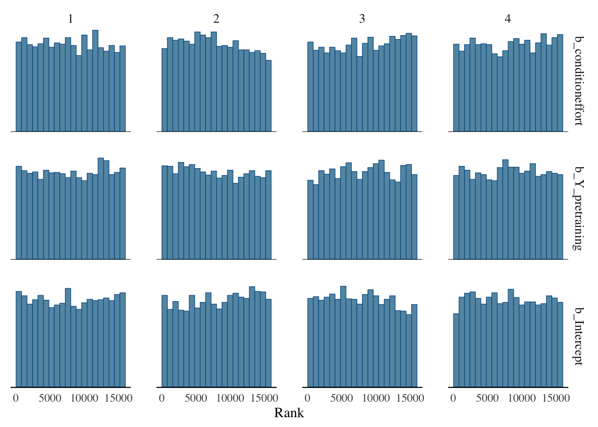
Table 13 shows the posterior distributions of b_conditioneffort, b_Y_pretraining, b_Intercept.
summ_fit7 <- as_draws_df(model7) |>
subset_draws(variable = c("b_conditioneffort", "b_Y_pretraining", "b_Intercept")) |>
summarise_draws()
knitr::kable(summ_fit7, digits = 2)| variable | mean | median | sd | mad | q5 | q95 | rhat | ess_bulk | ess_tail |
|---|---|---|---|---|---|---|---|---|---|
| b_conditioneffort | 0.28 | 0.28 | 0.13 | 0.13 | 0.07 | 0.49 | 1 | 4728.16 | 8082.62 |
| b_Y_pretraining | 0.17 | 0.17 | 0.01 | 0.01 | 0.16 | 0.18 | 1 | 6482.34 | 9782.76 |
| b_Intercept | -4.09 | -4.09 | 0.17 | 0.16 | -4.37 | -3.82 | 1 | 6967.35 | 10142.59 |
The analysis showed that effort preferences in post-training section under effort conditions were significantly higher than those in the performance condition in math task, with a posterior mean of 0.28 and a 90% CI of [0.07, 0.49].
Do effort preferences on the math task in the post-training section differ between the effort and neutral conditions? (model8)
Analysis
We used 4 chains, each with 8,000 iterations (first 4,000 as warm-ups).
Results
summary_results8<-summary(model8)
summary_results8 Family: binomial
Links: mu = logit
Formula: Y_posttraining | trials(N_posttraining) ~ condition + Y_pretraining + (1 | subj)
Data: dtmathavgwide[condition %in% e_vs_n] (Number of observations: 506)
Draws: 4 chains, each with iter = 8000; warmup = 4000; thin = 1;
total post-warmup draws = 16000
Multilevel Hyperparameters:
~subj (Number of levels: 506)
Estimate Est.Error l-95% CI u-95% CI Rhat Bulk_ESS Tail_ESS
sd(Intercept) 1.25 0.06 1.13 1.37 1.00 4503 8180
Regression Coefficients:
Estimate Est.Error l-95% CI u-95% CI Rhat Bulk_ESS Tail_ESS
Intercept -3.80 0.17 -4.14 -3.48 1.00 6142 9449
conditioneffort 0.20 0.13 -0.05 0.45 1.00 4012 6818
Y_pretraining 0.16 0.01 0.14 0.17 1.00 5705 9280
Draws were sampled using sampling(NUTS). For each parameter, Bulk_ESS
and Tail_ESS are effective sample size measures, and Rhat is the potential
scale reduction factor on split chains (at convergence, Rhat = 1).plot(model8)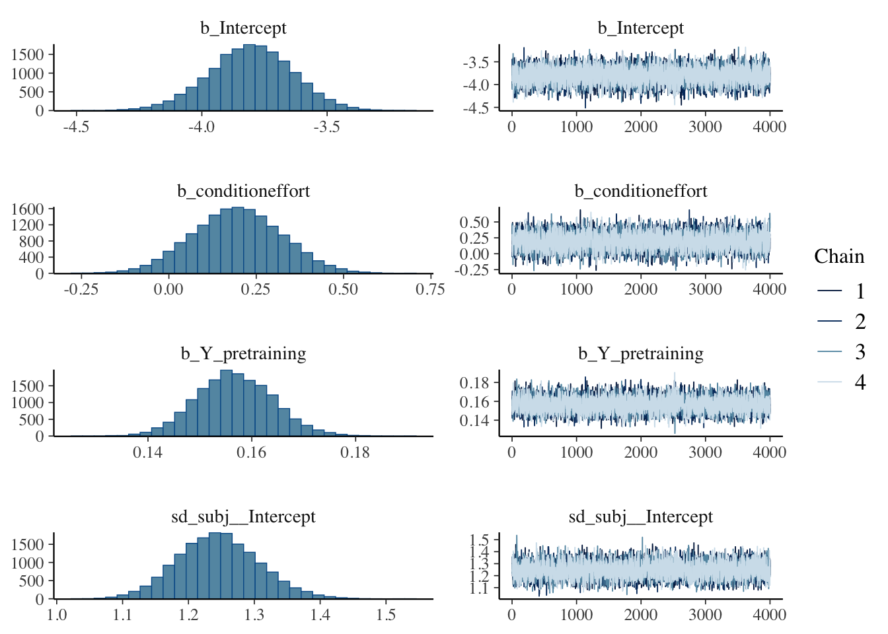
pp_check(model8)Using 10 posterior draws for ppc type 'dens_overlay' by default.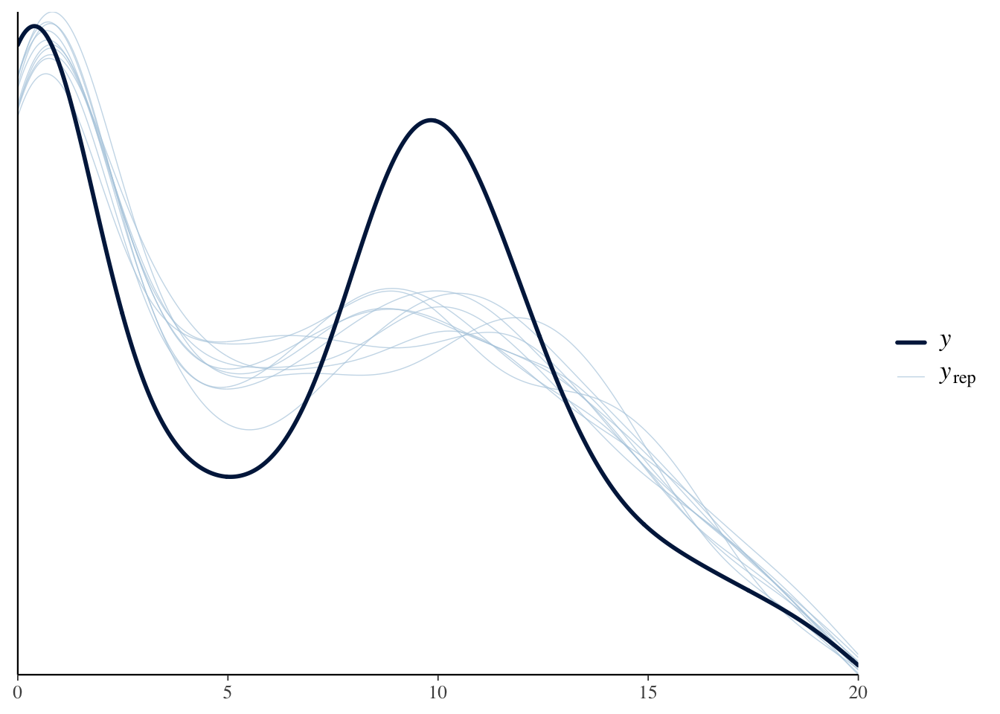
As shown in the rank histogram in Figure 8 below, the chains mixed well.
as_draws(model8) |>
mcmc_rank_hist(pars = c("b_conditioneffort", "b_Y_pretraining", "b_Intercept"))
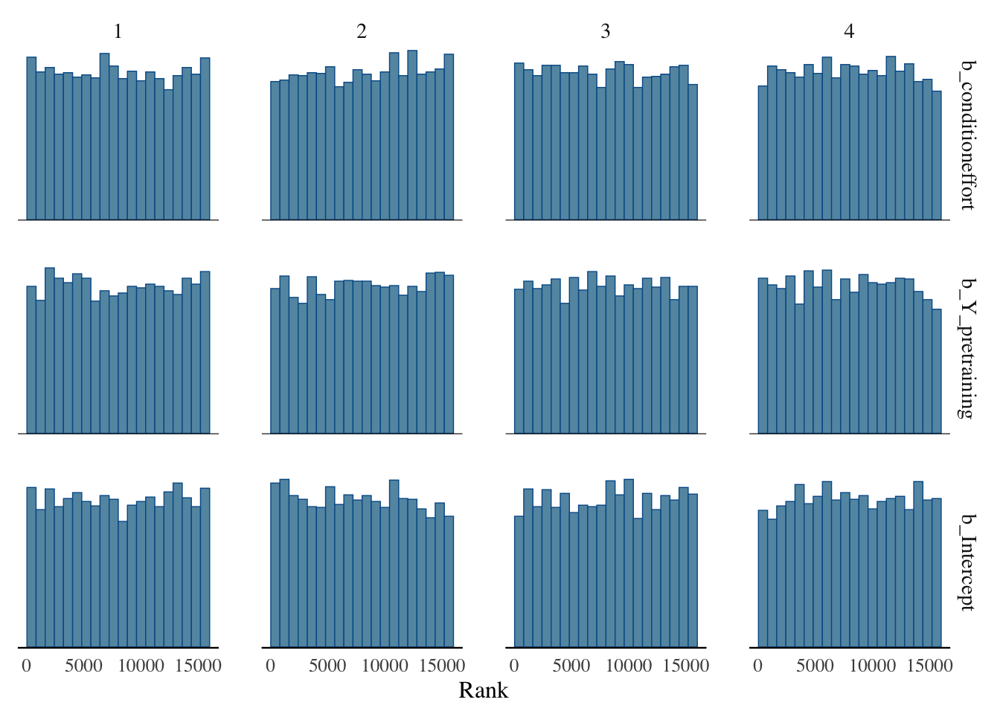
Table 14 shows the posterior distributions of b_conditioneffort, b_Y_pretraining, b_Intercept.
summ_fit8 <- as_draws_df(model8) |>
subset_draws(variable = c("b_conditioneffort", "b_Y_pretraining", "b_Intercept")) |>
summarise_draws()
knitr::kable(summ_fit8, digits = 2)| variable | mean | median | sd | mad | q5 | q95 | rhat | ess_bulk | ess_tail |
|---|---|---|---|---|---|---|---|---|---|
| b_conditioneffort | 0.20 | 0.20 | 0.13 | 0.13 | -0.01 | 0.41 | 1 | 4012.31 | 6818.20 |
| b_Y_pretraining | 0.16 | 0.16 | 0.01 | 0.01 | 0.14 | 0.17 | 1 | 5705.01 | 9280.25 |
| b_Intercept | -3.80 | -3.80 | 0.17 | 0.16 | -4.08 | -3.53 | 1 | 6141.74 | 9448.81 |
The analysis showed that effort preferences in post-training section under effort conditions were not significantly higher than those in the neutral condition in math task, with a posterior mean of 0.2 and a 90% CI of [-0.01, 0.41].